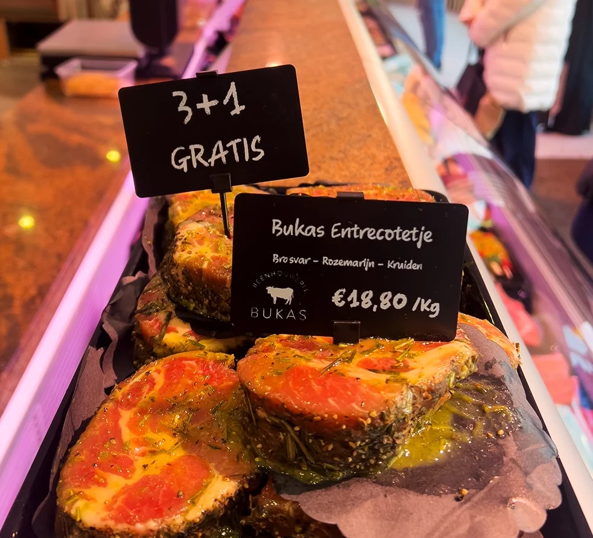
RundsvleesBukas entrecoteje
Ons eigen entrecoteje, mooi op smaak en klaar voor de pan of de grill.
Vers vlees, huisgemaakt beleg en broodjes die je met twee handen vastpakt. Van de jonge beenhouwer in de Kasteelstraat in Dilbeek, altijd met een glimlach erbij.
Vandaag open vanaf 08:00
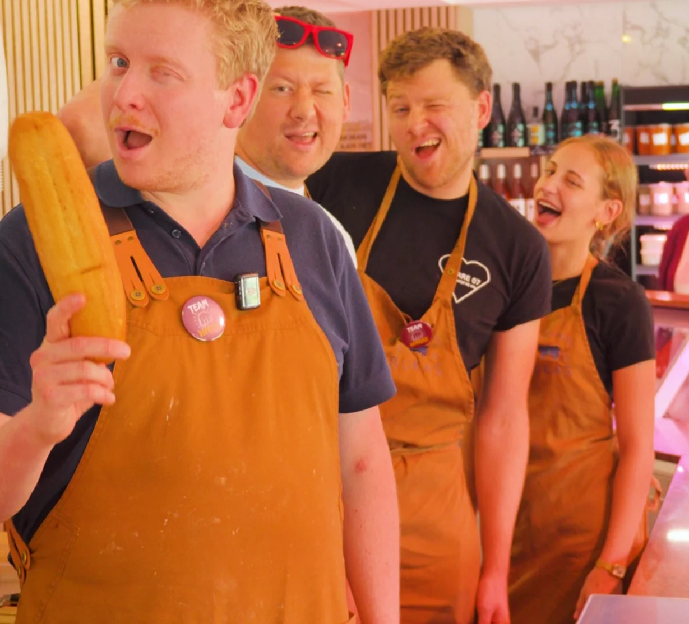
Veel maken we zelf, zoals onze américain préparé. En elke week zetten we iets in de kijker, met vaak iets gratis erbovenop.

RundsvleesOns eigen entrecoteje, mooi op smaak en klaar voor de pan of de grill.
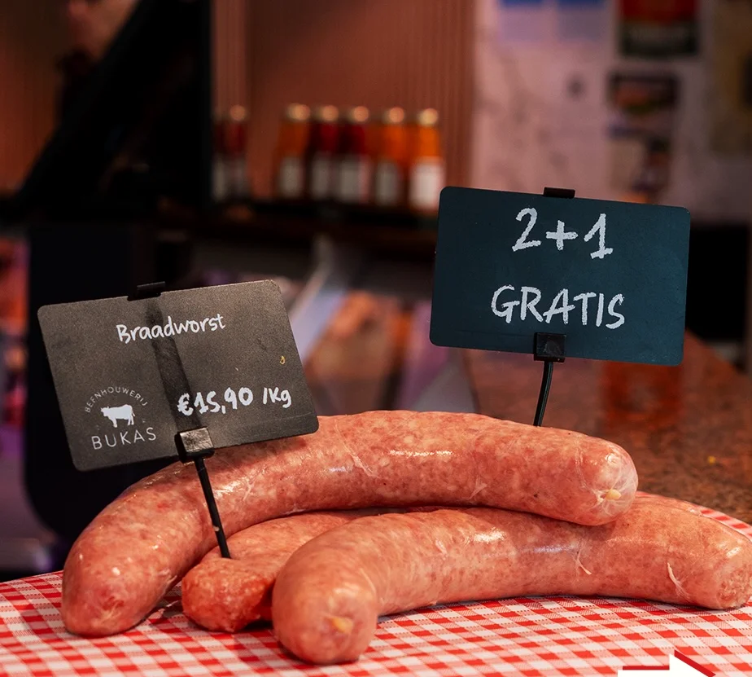
VersEen klassieker uit de toonbank. In de pan, op de barbecue of met wat stoemp ernaast.
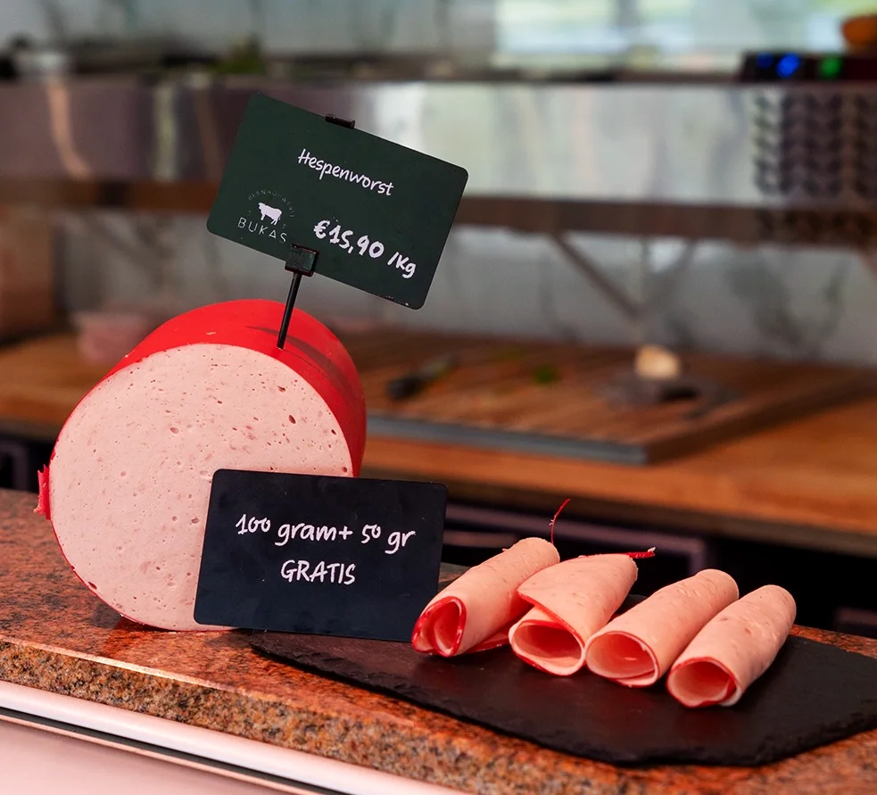
Op de boterhamDun gesneden voor op je boterham. Ideaal voor in de brooddoos.
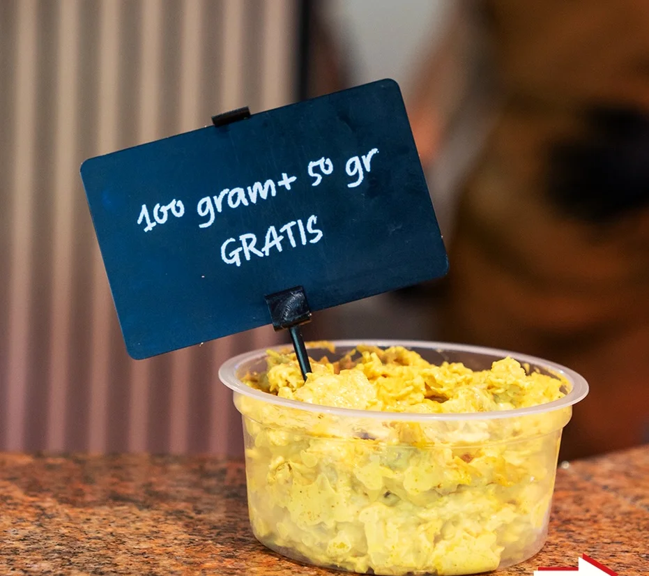
HuisgemaaktHeerlijk op den boterham. Dan mag het al eens wat meer zijn!
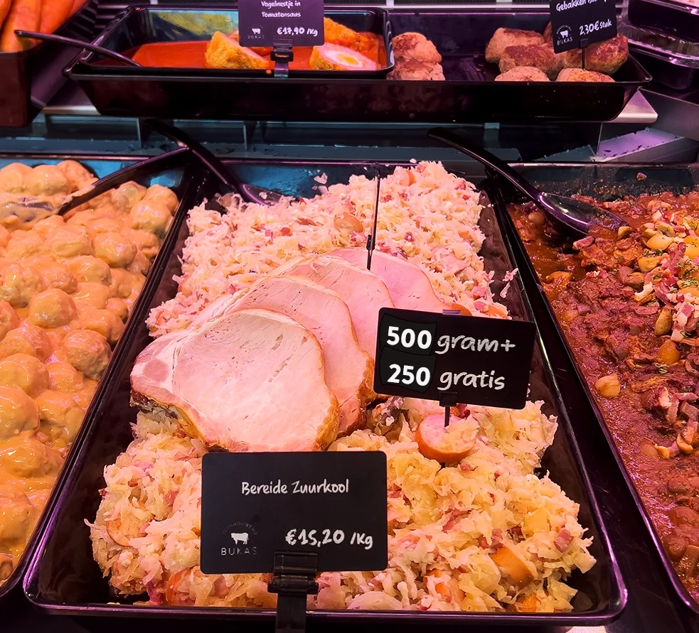
Kant en klaarPerfect bij dit herfstweer. Opwarmen en aan tafel, meer moet dat niet zijn.
Elke week staat er iets in promo: 3+1 gratis, of 50 gram extra bij je kip curry. Volg ons op Instagram en je mist er geen enkele.
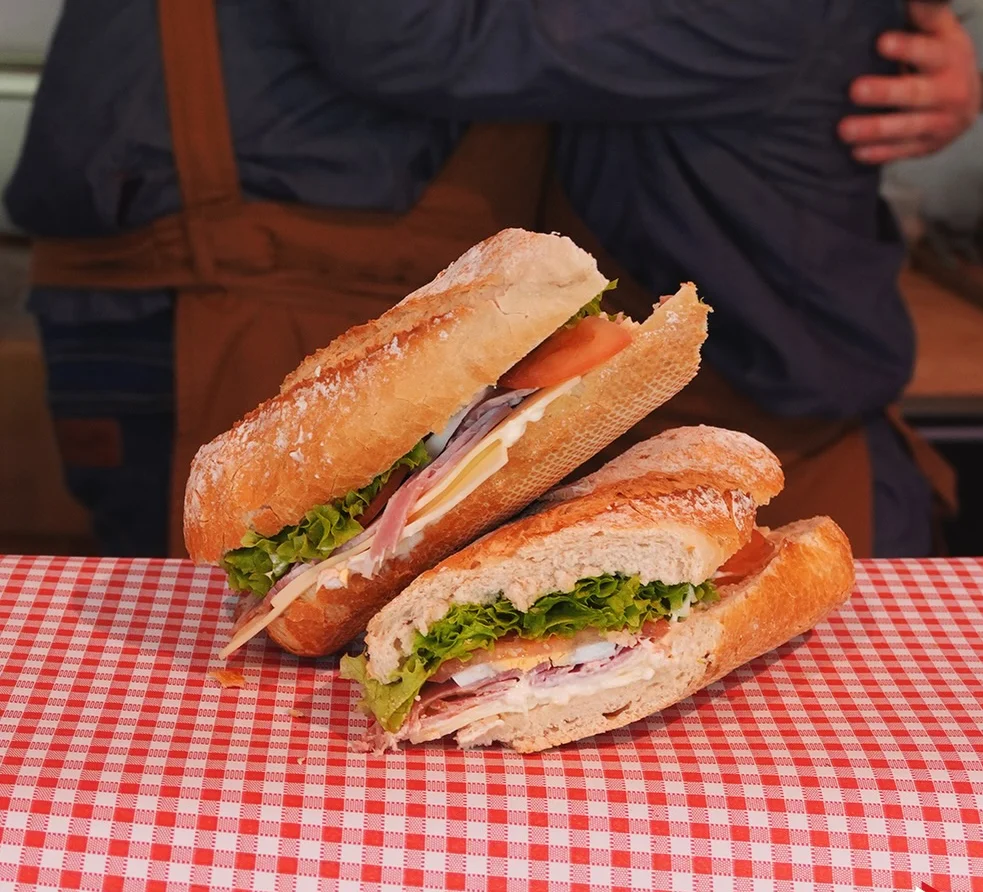
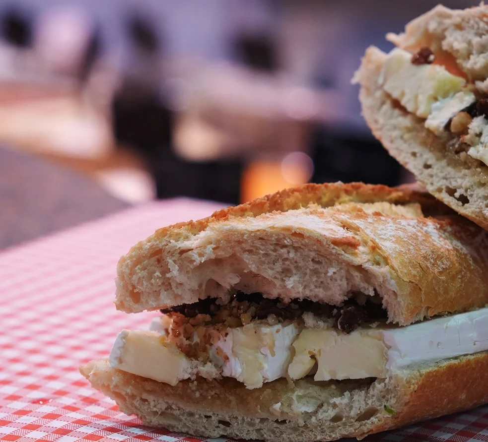
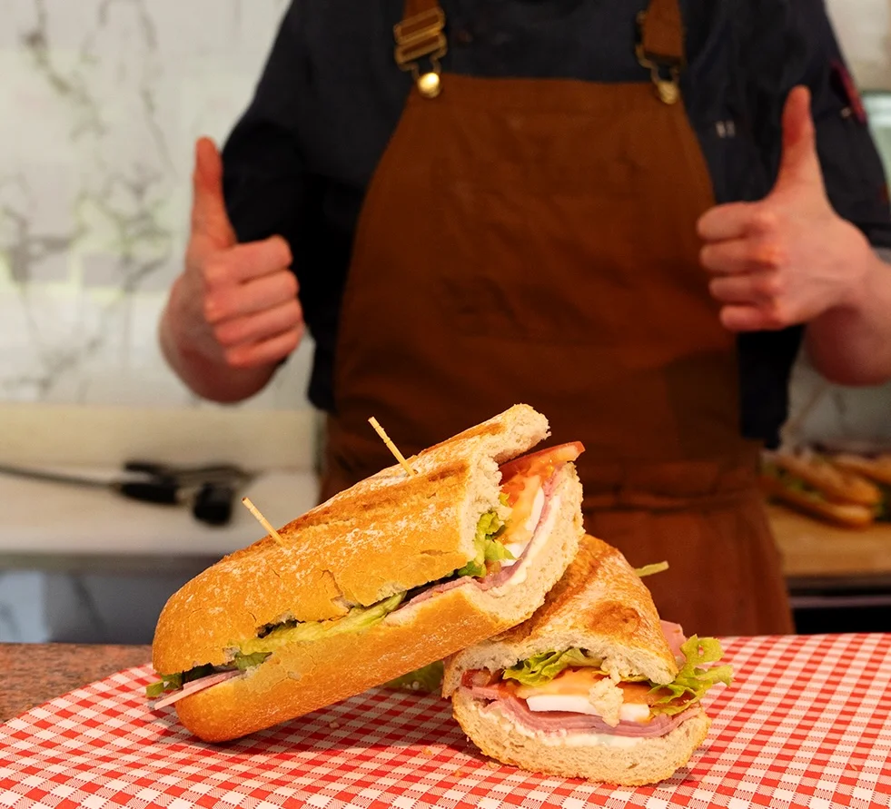
Vers stokbrood en rijkelijk belegd, zodat je echt genoeg hebt gegeten. Elke week zetten we er eentje in de kijker.
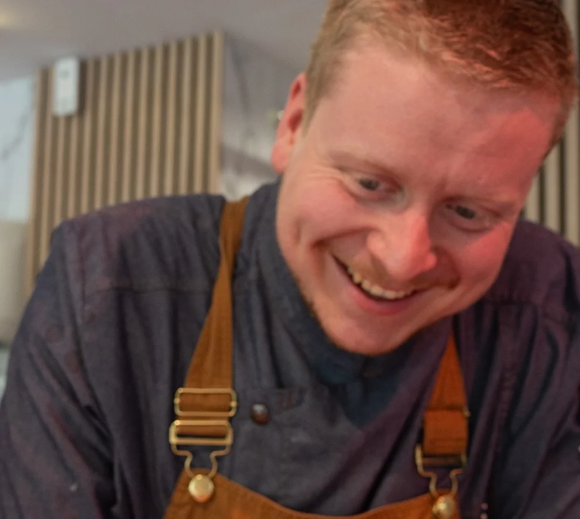
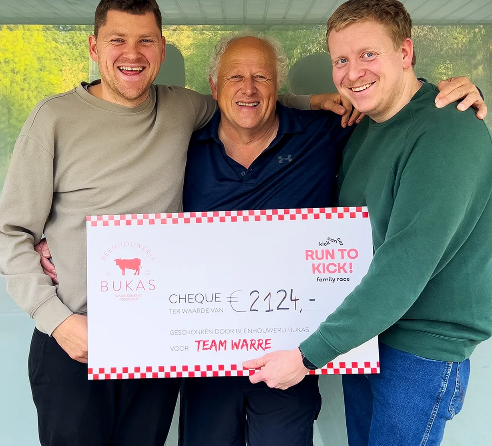
€ 2.124 voor Team WarreAchter de toonbank staan de patron en zijn team, schort aan en een grap klaar. We werken met ambacht en kwaliteit, en we doen graag mee in Dilbeek. Met onze septemberactie haalden we € 2.124 op voor Team Warre en Kick Cancer, en op Oosthoek Live stonden we met onze chili con carne.
Een feest of een etentje? Vraag gerust wat we voor je kunnen klaarmaken.
Online besteld? Haal je pakket ook buiten onze openingsuren op, met verse dagschotels.
Tachtig reviews op Google, en de meeste hebben het over hetzelfde: vers, rijkelijk en vriendelijk.
★★★★★"Daarnet gestopt voor een belegd broodje als tussenstop voor het werk. Overheerlijk! Lekker vers en lekker stokbrood. Ik woon zelf in Affligem maar zou er zeker voor omrijden."
★★★★★"Een echte aanrader! Deze jonge beenhouwer levert topkwaliteit: alles is supervers en ontzettend lekker. Je proeft meteen het verschil."
★★★★★"Mooie winkel, vriendelijk personeel en bovenal: super lekker! Je proeft de kwaliteit. De broodjes zijn dan ook zeer rijkelijk belegd."
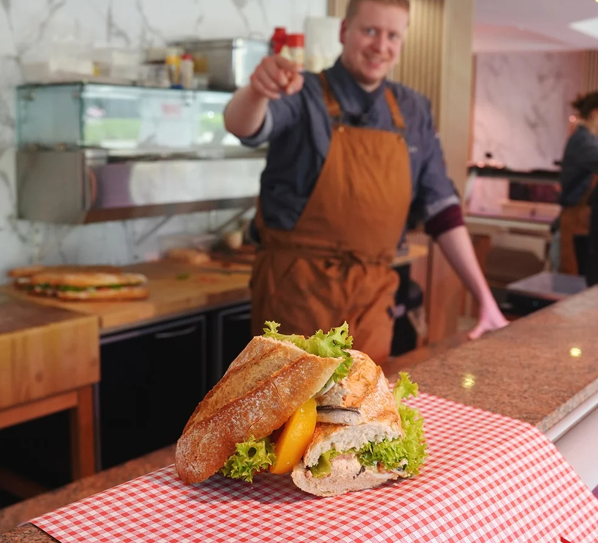
Kasteelstraat 30, DilbeekIn de Kasteelstraat, vlak bij het Park van Dilbeek. Iets speciaals nodig? Bel gerust even, dan leggen we het voor je klaar.
Ik maakte deze demo voor jullie om te tonen wat er kan. Na een kort gesprek maak ik er iets veel persoonlijkers van, helemaal naar jullie wens.
Vrijblijvend. Ik kom langs of we bellen.
Op maat, op jullie eigen domein.
Geen voorschot. Jullie betalen pas als alles klaar is.
Hosting, domeinnaam en kleine wijzigingen, zoals nieuwe openingsuren.
Omdat een voorbeeld meer zegt dan een mail. Zo zien jullie meteen wat er kan, en het kost jullie niets.
Nee. Het gesprek is vrijblijvend. Vinden jullie het niks, dan is het daarmee gedaan.
Na ons gesprek staat jullie site binnen 10 tot 14 dagen online.
Zeker. Jullie domeinnaam kan gewoon blijven, de nieuwe site komt in de plaats van de oude.
Nee, dat doe ik op basis van ons gesprek. Eigen foto's zijn mooi meegenomen, maar niet nodig om te starten.